rqt 可视化工具箱：GUI 调试工作台
对着终端敲 echo、grep、awk，是命令行侠的浪漫，但效率有天花板。rqt 是 Qt 插件化调试工作台：图形看拓扑、曲线看波形、图像看画面——把"查/看"两件事从终端搬进 GUI。本课讲清插件架构原理，用本机真实话题（底盘电压、相机图像）实战核心插件。
目标本课学完，你应该能做到
能阐述 rqt 基于 Qt 插件框架的设计原理——为什么把多个调试工具整合为可组合面板，比"开一堆独立窗口"在机器人开发中更高效。
能熟练用 rqt_graph 画节点-话题-服务拓扑诊断通信链路，用 rqt_plot 实时绘制任意话题字段的曲线看时序趋势。
能用 rqt_console 按 DEBUG/INFO/WARN/ERROR/FATAL 五级过滤日志快速定位问题节点，并用 ros2 service call .../set_logger_levels 动态提级、抓完调回。
把"先 rqt_graph 定位拓扑异常，再 rqt_plot 确认数值趋势"当成标准调试流程，用在后续实验里。
rqt_graph 的读图能力——它能把"我以为连上了"和"实际没连上"一眼区分开。难点：rqt_plot 采样率不足会产生"假波形"（奈奎斯特），别把显示问题误判成数据问题。
01问题引入：黑盒调试的困局
ros2 topic echo / hz、EXP-05 的 ros2 node info、EXP-10 的 ros2 param set——你已经用熟了这一串命令行工具。本章做的事只有一件：把它们全部装进同一个图形界面，调试时不再开十几个终端。小车导航突然停了，报错只有一句 "no feedback from controller"
开 5 个终端分别 echo 各话题、grep 日志——10 分钟过去还没看清链路
节点关系是什么？哪条话题断了？波形哪里跳变了？终端很难一眼回答
rqt_graph 一张图看拓扑，rqt_plot 一条曲线看跳变，秒级定位断点
02先看现象：四步让数据可视化
案例对象是真实小车 car1：先把底盘应用真正跑起来（不然后面全是空窗口），再用四步把"数据活着 / 关系连着 / 数值对得着 / 画面看得见"变看得见——每步约 30 秒。
bringup.launch.py 会按顺序拉起底盘驱动（car1_base_driver）、robot_state_publisher、EKF 里程计等一组节点——后面要看的电池话题就是底盘驱动发出来的：
ros2 launch car1_bringup bringup.launch.py
ros2 topic list | grep car1 ros2 topic hz /car1_base_driver/battery ros2 topic echo /car1_base_driver/battery
这个话题是谁发布的？发布节点就是 /car1_base_driver——刚才 bringup 拉起的底盘驱动节点，它从驱动板读电池电压，约 1Hz 往外发一条。用 ros2 topic info /car1_base_driver/battery --verbose 能看到 Publisher 正是这个节点。echo 出来的数怎么读：11993、11975 是连续两秒的两条消息，单位是毫伏（mV）——换算 ≈ 12.0V，后一条比前一条低 18mV，放电在缓慢进行；这就是下一步曲线要画的东西（Ctrl+C 退出 echo）。
ros2 run rqt_graph rqt_graph
🖼 界面截图 · rqt_graph：car1 底盘电池链路
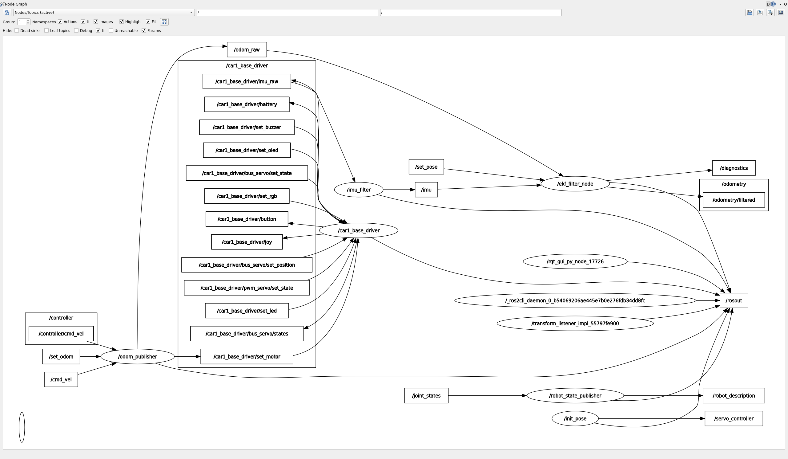
照着截图怎么读：
① 顶部工具栏——Refresh 手动重绘（节点上下线不会自动刷新）、放大缩小、Hide Debug 勾选框：把调试话题一键藏掉：
② 椭圆 = 节点——图里那个写着 car1_base_driver 的椭圆，就是发布电池话题的底盘驱动；
③ 矩形 = 话题——/car1_base_driver/battery 挂在椭圆旁边，是数据的"公告板"；
④ 箭头 = 数据流方向——从椭圆指向矩形的箭头 = 该节点在发布；再有订阅者会从矩形连出第二个箭头：
⑤ 本案例判读——椭圆→矩形箭头在，链路就是活的；箭头消失 = 发布节点没起（回到终端 0 查 launch）；勾了 Hide Debug 却图全空 = 环境没 source 同一个工作空间。
为什么路径末尾必须写到 /data？rqt_plot 只能画标量数值：/car1_base_driver/battery 只是话题名，对应的是一整条消息（一个容器），不是可画成曲线的数字——真正的电压值装在消息的 data 字段里（ros2 topic echo 打出来的 data: 就是它）。所以参数必须给字段级路径 话题/字段：末尾少了 /data，曲线区不会出线。逐段拆解：ros2 run rqt_plot rqt_plot 启动插件，路径作为参数直接带上，省去进 GUI 再手打：
ros2 run rqt_plot rqt_plot /car1_base_driver/battery/data
🖼 界面截图 · rqt_plot：电池电压实时曲线
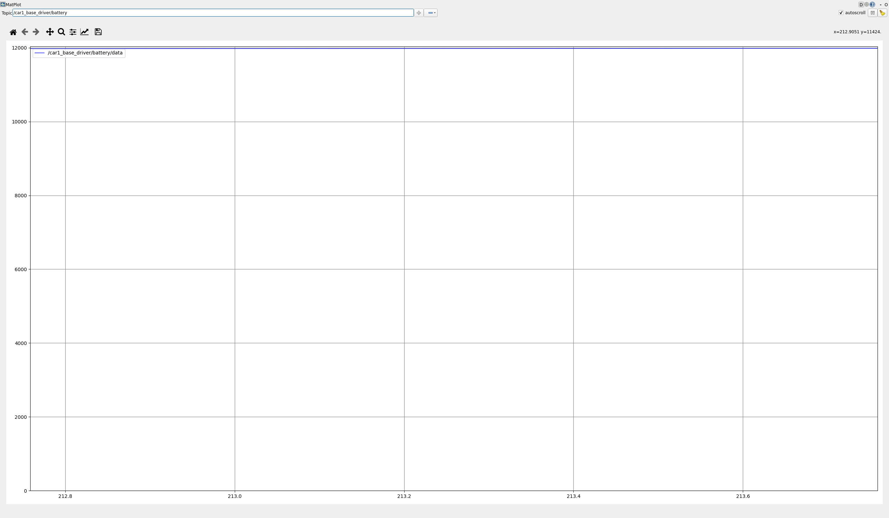
照着截图怎么读：
① 左上角控制条——话题路径输入框（/car1_base_driver/battery/data，注意结尾的字段级 /data）、+ 按钮（从话题树选字段，防手打错）、勾选框：必须打钩才真正开始订阅绘制；
② 曲线区横轴——滚动的时间，新数据从右侧进来、旧数据往左被推出；曲线"冻结"不动 = 没有新消息，不是程序卡死；
③ 曲线区纵轴——数值量程，自动缩放：本案例是 mV 口径，基线应在 11900 上下；看小幅波动先看左侧刻度，别被自动量程放大了错觉；
④ 曲线右端点——当前最新值，应与 ros2 topic echo --once 出的数（如 11975）基本一致——GUI 看趋势、CLI 定数值，两边对得上才下结论；
⑤ 本案例判读——1Hz 的缓变信号在图上是一条缓慢起伏的基线；给小车上电/断电让电压变化，曲线应实时抬头/下压。
前面三步看的是数值与拓扑，第四步把相机画面也接进来：先在终端 4 起深度相机驱动（launch 会占满当前终端），再另开一个终端跑 rqt_image_view——两个命令缺一不可，没驱动就没话题，没界面就看不到帧：
ros2 launch car1_peripherals depth_camera.launch.py ros2 run rqt_image_view rqt_image_view
🖼 界面截图 · rqt_image_view：RGB 彩色帧 + Depth 深度帧
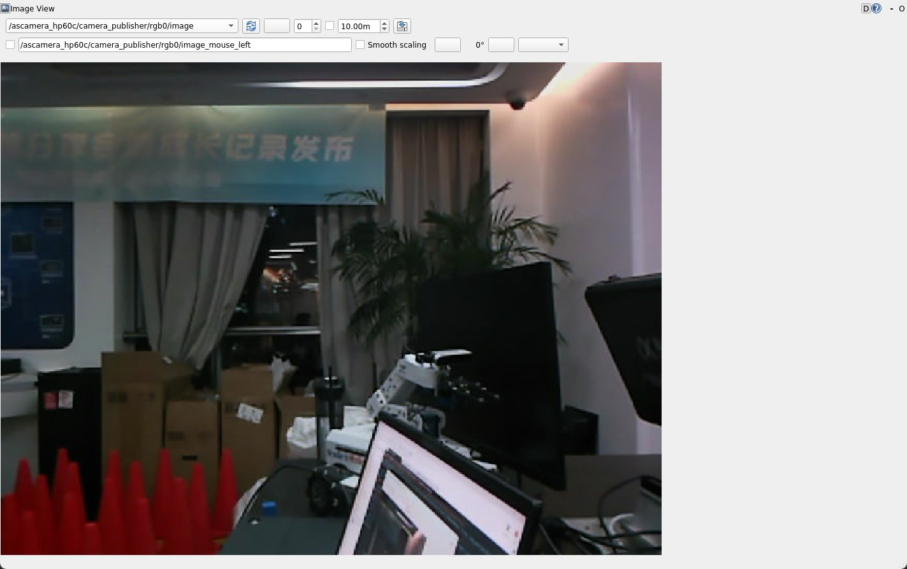
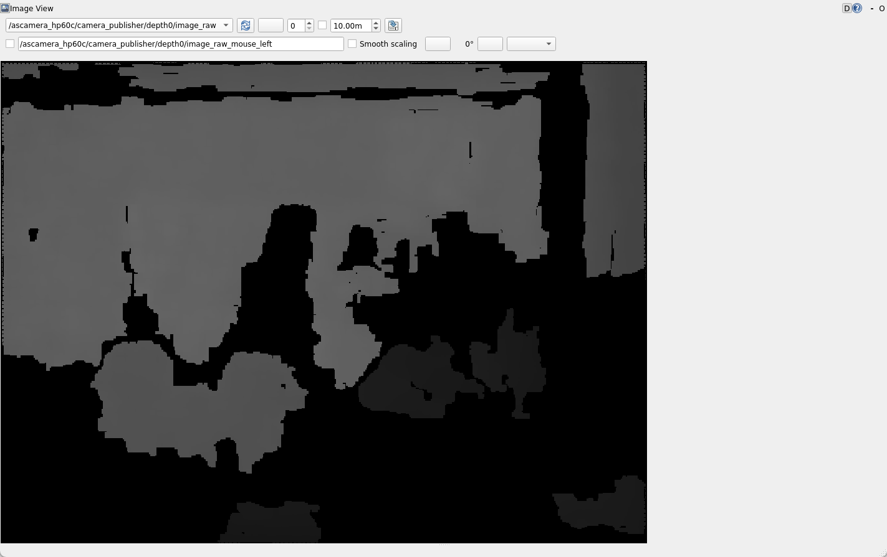
照着截图怎么读：
① 左侧话题下拉——打开插件时画面是空白的，必须先在左侧列表点选图像话题：/camera/color/image_raw（RGB）或深度话题；没点选=没订阅，不是没数据；
② RGB 截图——真彩图像回答"看得见什么"：物体、颜色、文字标签一眼可读，和人眼看到的一致；
③ Depth 截图——深度按距离映射成明暗/伪彩，回答"离我多远"：没有彩色纹理也能测距，是避障与导航的原始输入；
④ 画面冻结判读——图定住不动 = 该话题没有新帧推入，先跑 ros2 topic hz /camera/color/image_raw 验活，与 rqt_plot 曲线冻结同一逻辑，不是 GUI 卡死；
⑤ 本案例判读——下拉里根本没有 /camera/* 条目 = depth_camera launch 没起来（回终端 4 查 launch 日志）；帧在刷但全黑 = 相机没接好/被遮挡，话题是活的。
✔ 终端 0 把应用跑起来 + 四步走完：数据有数（11993）、拓扑有箭头、曲线在滚、画面在刷——"有没有 / 连没连 / 对不对 / 看不看得到"四个问题都有了可视答案，细节在 03 / 04 节拆解。
03原理讲解
插件化架构为什么好用
承接 01 节"把命令行工具装进同一个图形界面"——先看四层怎么叠，再把"怎么装、怎么开"的入口抄走。
sudo apt install ros-humble-rqt（元包；单插件对应 ros-humble-rqt-graph 这类包，ros-humble-rqt-desktop 一站式带齐），装完 source /opt/ros/humble/setup.bash。开：三种等价入口——①
rqt 进容器、Plugins 菜单里选；② rqt --standalone rqt_graph 直开单插件；③ ros2 run rqt_graph rqt_graph（04 节"启动方式三连"用的就是③）。本课案例：04 节用 graph 看拓扑、plot 画
/car1_base_driver/battery/data。失败模式：没 source 同源环境 → 菜单里找不到插件、图空白（05 节坑表"graph 图是空的"）。rqt 启动时扫描 /opt/ros/humble/share/rqt_* 下声明的插件入口，动态加载进菜单。写一个自己的 rqt 插件，就能把私有调试界面挂进官方工具箱。
所有插件共用 rqt 进程内的 ROS 节点——你在 rqt_graph 里看到的图，和 rqt_plot 订阅的是同一套话题系统，无需逐个工具重新连接。
窗格停靠、插件组合、参数设置可整体存成 Perspective。排查导航问题存一个、调试串口存一个，切换工作场景一键还原，团队共享布局文件保持排查口径一致。
rqt 定位是"快速看"：graph 3 秒找断点、plot 秒级看趋势。脚本化/CI 场景仍回 CLI（ros2 topic echo / ros2 param）。GUI 提效率，CLI 保可复现，别二选一，要各司其职。
| 任务 | 命令行做法 | rqt 做法 | 效率差距 |
|---|---|---|---|
| 找断流话题 | 逐个 topic echo + 人肉比对 | rqt_graph 看箭头有无，右上刷新 | 秒级 vs 分钟级 |
| 看波形趋势 | echo 刷屏心算 | rqt_plot 输入 /topic/field 直接画线 | 直观 vs 不可行 |
| 看相机画面 | echo 打印整帧二进制，毫无意义 | rqt_image_view 选话题即见实时画面 | 可视化 vs 不可行 |
| 看复杂消息字段 | echo 分层嵌套结构滚动难对齐 | rqt_topic 树形展开逐字段查 | 结构化 vs 刷屏 |
ros2 param set——可脚本化、可复现。日志一侧的分工：rqt_console 负责按级别过滤查看，改发布级别仍走 set_logger_levels 服务调用（可照抄命令在 04 节"日志用命令行管"）。rqt 的主场是看：图（拓扑/波形/图像）和数据。
同一系统，四双眼睛
建立在上图共享上下文之上——四个插件投的是同一套话题数据，差别只在"回答哪个问题"。按问题选工具，别凭手感开窗口：
怎么开：ros2 run rqt_graph rqt_graph。本课落点：04 节步骤 2 找 car1_base_driver → /battery 发布箭头。失败模式：图空白先 Refresh、查是否同 source（05 节坑表）。
怎么开：ros2 run rqt_plot rqt_plot /car1_base_driver/battery/data。本课落点：04 节步骤 3 电压曲线。失败模式：路径没写到字段级就不出线（String 不可绘）。
怎么开：ros2 run rqt_image_view rqt_image_view，左上下拉框选 /camera/color/image_raw。本课落点：04 节"看图"步骤。失败模式：画面全黑先用 topic hz 验活，别怪插件。
怎么开：rqt 容器 → Plugins → Introspection → Topic。本课落点：嵌套消息分层查看（替代刷屏 echo）。失败模式：只看列表不点开字段，等于没看。
五大核心插件逐个拆
Plugins → Introspection → Node Graph。椭圆=节点、矩形=话题、箭头=数据流。Hide Debug 勾上，/parameter_events、/rosout 消失，主链路一目了然。右上 Refresh 手动刷新——节点动态变化时不会自动重绘。
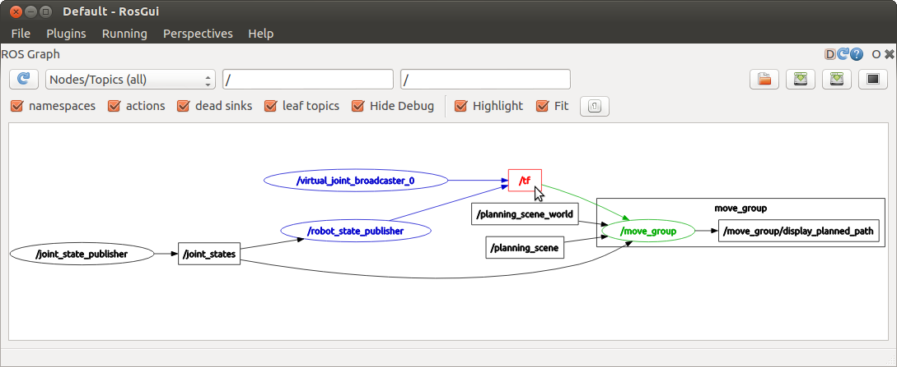
Visualization → Plot。路径必须写全 /topic/field，如 /car1_base_driver/battery/data（不带字段不出线；String 字段不可绘）。"加号"按钮从话题树选字段最稳；还支持数学表达式 /a/data + /b/data 合成曲线。
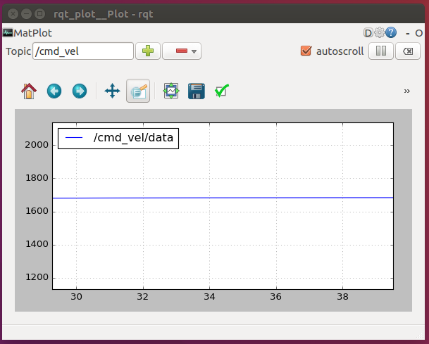
Visualization → Image View。订阅 sensor_msgs/Image，把相机画面直接显示在窗口里——比 ros2 topic echo 打印二进制流实用一万倍。左上角下拉框切换话题，是感知调参的"必演"窗口。
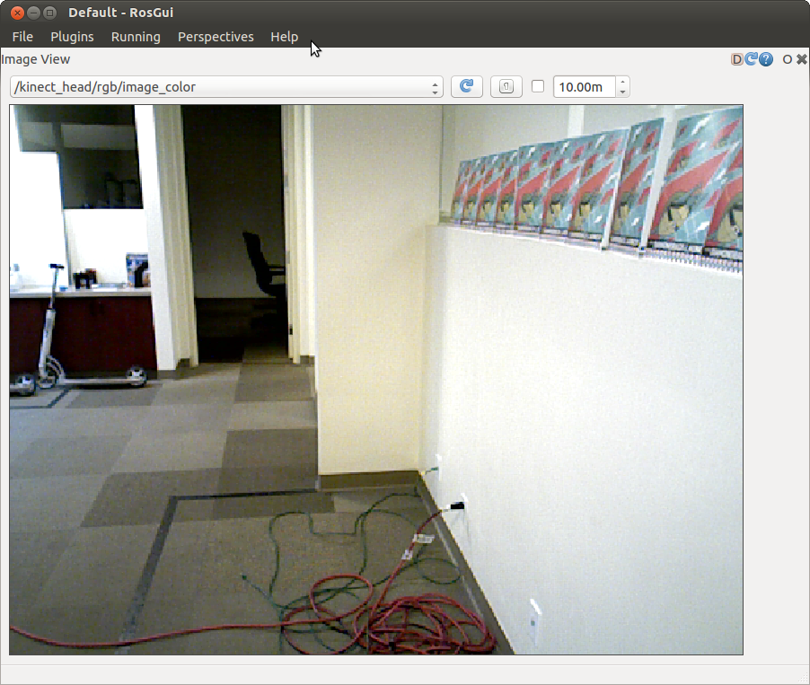
echo 的 GUI 版：话题列表带频率/类型，点开分层展示消息字段，位姿/多传感器嵌套结构不用在刷屏流里对齐看。适合"看一眼就走"的快速检查。
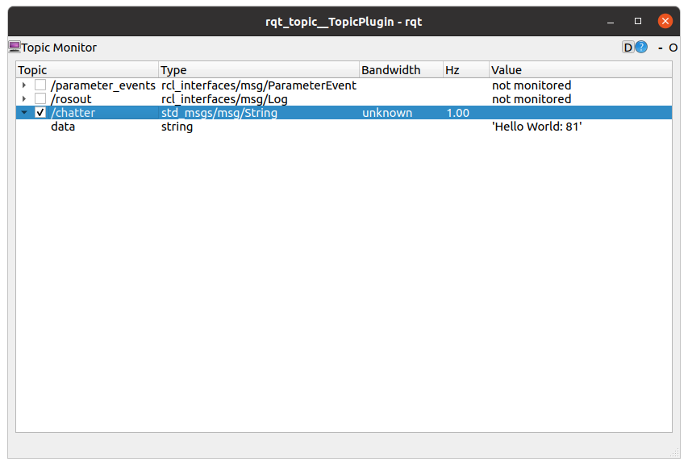
Logging → Bag。时间轴拖动、勾选话题、字段绘图、导出 CSV——录包数据分析的 GUI 入口，与 CLI 的 ros2 bag info/play 互补（详见 EXP-16）。
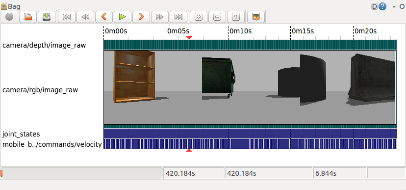
rqt 菜单选、rqt --standalone rqt_graph 直开、或 ros2 run rqt_graph rqt_graph 带参启动，把名字换掉即可。rqt_bag 同理：rqt → Plugins → Logging → Bag（EXP-16 录包后用它回放）。失败模式：三个入口必须在 source 过同一 ROS 环境的终端里执行，否则菜单缺项、窗口空白（05 节坑表）。ros2 run rqt_console 的场景可用 ros2 topic echo /rosout + grep 覆盖；动态改级别用标准的 ros2 service call /<node>/set_logger_levels rcl_interfaces/srv/SetLoggerLevels（前提是日志服务节点在线）——本机现成、可写进脚本、比 GUI 更好复现。
ros2 topic hz 的意义：先确认采样率，再信波形。
04实验步骤
工程化顺序：先看全景（图 14-2）→ 启动三连 → graph + plot 交叉印证（图 14-3 定顺序）→ image_view 与日志 → 布局存盘。
启动方式三连
# 方式一：启动完整工作台（自带菜单可再开任意插件） $ rqt # 方式二：直启单个插件（省去菜单导航，脚本常用；本机均已安装） $ rqt_graph $ rqt_plot $ rqt_image_view $ rqt_topic # 方式三：带参数启动（指定绘图话题，省手打） $ ros2 run rqt_plot rqt_plot /car1_base_driver/battery/data $ ros2 run rqt_image_view rqt_image_view
rqt_plot 依赖 /opt/ros/humble/bin 在 PATH 里（有些环境没配好）。ros2 run rqt_plot rqt_plot 走 ROS2 的包解析机制，只要包装了就能跑，还能顺带传参数——本机实测均可用，推荐优先用这个写法。
补充一句原理：set_logger_levels 不是每个节点凭空自带的，它由 日志服务节点（如 logger_level_service，或 rclpy/rclcpp 中开启 enable_logger_service=True）统一提供；只有该服务在线，下面这条命令才有对象可调。同理，ros2 topic echo /rosout 要求发起节点以 DEBUG 级别重新发布日志——先提级，才看得见。
查一个节点当前有哪些 logger、什么级别：
ros2 node list # 先拿节点名，如 /car1_base_driver ros2 service list | grep logger
等价于 rqt_logger_level 的拖拽操作，但可写进脚本、可在 ssh 里跑：
ros2 service call /car1_base_driver/set_logger_levels \ rcl_interfaces/srv/SetLoggerLevels \ "{levels: [{logger: '', level: 10}]}" # 10=DEBUG
✔ 想抓 `timeout` 相关上下文？直接用 `ros2 topic echo /rosout | grep -i timeout` 代替 rqt_console 的 GUI 过滤。
ssh -X iflytek@10.1.134.9 rqt # 窗口经 X11 转发到本机显示
10.1.134.9 上的 rqt）与"显示"（你笔记本的屏幕）分离，ssh -X 把远端的 X11 流量加密隧道转发回本地 X Server 显示。前提：客户端（你的笔记本）必须装有 X server——
· Linux 桌面：自带，开箱即用；
· Windows：装 VcXsrv 或 Xming，启动后再
ssh -X；
· macOS：装 XQuartz；
· Wayland / 纯 headless 环境要么改用 VNC，要么直接在带显示器的机器上跑。
四个核心案例：照抄就能跑通
下面四个案例覆盖本实验的四个主力插件。所有命令均带完整 source 链（先激活 ROS2 再激活工作空间并统一域号），新开终端照抄即可；案例 2、3 复用案例 1 的终端 1，不用重开 bringup：
source /opt/ros/humble/setup.bash && source /home/iflytek/ros2_ws/install/setup.bash && export ROS_DOMAIN_ID=0——三段缺一不可：①系统发行版环境 ②工作空间里编好的 car1 包 ③统一域号保证两侧能发现彼此。
为什么先起应用：rqt_graph 是"拍照"——系统里没节点在跑就什么都不画。这里启动的是完整 bringup（底盘驱动 car1_base_driver、robot_state_publisher、EKF），为后面所有案例供给话题。
# 同一 source 链 + 启动应用（下同，不再重抄） source /opt/ros/humble/setup.bash && source /home/iflytek/ros2_ws/install/setup.bash && export ROS_DOMAIN_ID=0 ros2 launch car1_bringup bringup.launch.py
新开一个终端，先跑同一条 source 链，再直启插件：
source /opt/ros/humble/setup.bash && source /home/iflytek/ros2_ws/install/setup.bash && export ROS_DOMAIN_ID=0 ros2 run rqt_graph rqt_graph
🖼 界面截图 · 案例 1 rqt_graph（可直接替换 images/case-rqt-graph.png）

照着截图怎么读：
① 椭圆——一个正在运行的节点（如 car1_base_driver）；
② 矩形——一个话题（数据"公告板"），如 /car1_base_driver/battery；
③ 箭头——数据流向：节点→话题=在发布，话题→节点=在订阅；
④ Hide Debug 勾选——一键藏掉 /rosout、/parameter_events 等调试链路，主链路一目了然；
⑤ Refresh 按钮——节点上下线后图不会自动重画，点它才刷新。
✔ 能看到椭圆连着 /car1_base_driver/battery，案例 1 通关。
若终端 1 的 bringup 还在跑，直接跳到终端 2；万一关掉了，用与案例 1 完全相同的命令拉起来即可。
# 仅在 bringup 已退出时才需要重跑： source /opt/ros/humble/setup.bash && source /home/iflytek/ros2_ws/install/setup.bash && export ROS_DOMAIN_ID=0 ros2 launch car1_bringup bringup.launch.py
字段级路径（/car1_base_driver/battery/data）当参数直接传入，省去进 GUI 手打；启动后记得确认左上勾选框已打钩才会真订阅。
source /opt/ros/humble/setup.bash && source /home/iflytek/ros2_ws/install/setup.bash && export ROS_DOMAIN_ID=0 ros2 run rqt_plot rqt_plot /car1_base_driver/battery/data
🖼 界面截图 · 案例 2 rqt_plot（可直接替换 images/case-rqt-plot.png）
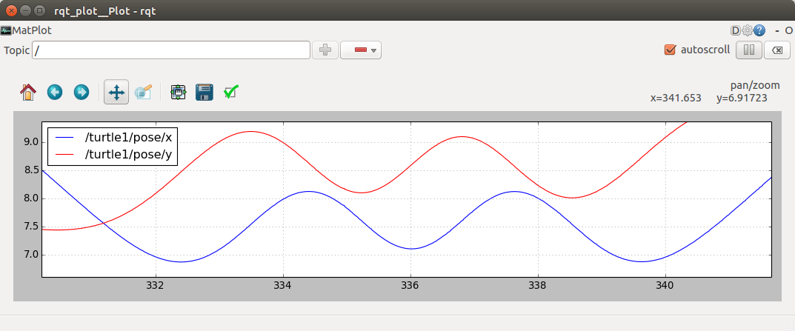
照着截图怎么读：
① 左上控制条——话题路径输入框、+（从话题树选字段防手打错）、勾选框：必须打钩才开始绘制；
② 横轴——滚动的时间：新数据从右进、旧数据往左推；曲线"冻结"= 没有新消息，不是卡死；
③ 纵轴——数值量程自动缩放：看波动先看左侧刻度，别被放大的量程骗了；
④ 曲线右端——当前最新值，应与 ros2 topic echo --once 基本一致；
⑤ 与 CLI 对账——GUI 看趋势、CLI 定数值，两边对得上才下结论。
✔ 曲线在滚、右端值≈ros2 topic echo 报的数，案例 2 通关。
案例 3 与案例 2 一样依赖 bringup 的话题，终端 1 不用动。
# 仅在 bringup 已退出时才需要重跑： source /opt/ros/humble/setup.bash && source /home/iflytek/ros2_ws/install/setup.bash && export ROS_DOMAIN_ID=0 ros2 launch car1_bringup bringup.launch.py
rqt_topic 把 ros2 topic list 升级成带类型、发布者数、订阅者数、频率的表格，一眼看出谁在发、谁在收、发多快。
source /opt/ros/humble/setup.bash && source /home/iflytek/ros2_ws/install/setup.bash && export ROS_DOMAIN_ID=0 ros2 run rqt_topic rqt_topic
🖼 界面截图 · 案例 3 rqt_topic（待补真图，替换 images/case-rqt-topic.png）

照着截图怎么读：
① Topic 列——全部在线话题名，点击列头可排序，方便定位 /car1_* 车体话题；
② MessageType 列——消息类型（如 std_msgs/Float32），与 ros2 topic type 等价；
③ publishers / subscribers 列——发布者、订阅者个数：某话题 0 订阅 = 没人在消费，0 发布 = 空壳；
④ Frequency 列——实测发布频率（Hz），应与 ros2 topic hz 结果对得上；
⑤ 左上过滤框——输入 car1 瞬间只剩车体相关行，排查时先过滤再细看。
✔ battery 一行的 Frequency ≈1Hz、发布者 ≥1，案例 3 通关。
注意换包了：图像来自相机外设，不是底盘 bringup——这条 launch 拉起 car1_peripherals（含 Ascamera HP60C 相机驱动）。同样先跑 source 链保持域号一致。
source /opt/ros/humble/setup.bash && source /home/iflytek/ros2_ws/install/setup.bash && export ROS_DOMAIN_ID=0 ros2 launch car1_peripherals peripherals.launch.py
参数直接指定彩色话题，开箱即显；要看深度图只换最后一个话题名（见下方备用命令）。
source /opt/ros/humble/setup.bash && source /home/iflytek/ros2_ws/install/setup.bash && export ROS_DOMAIN_ID=0 ros2 run rqt_image_view rqt_image_view /ascamera_hp60c/camera_publisher/rgb0/image # 深度图备用话题——只换最后一段： ros2 run rqt_image_view rqt_image_view /ascamera_hp60c/camera_publisher/depth0/image_raw
🖼 界面截图 · 案例 4 rqt_image_view（可直接替换 images/case-rqt-image-view.png）
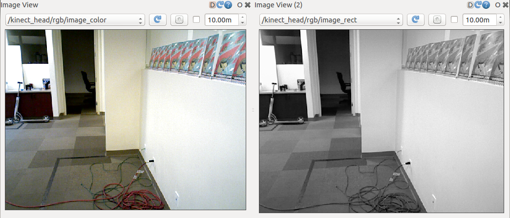
照着截图怎么读：
① 左上话题下拉——列出当前全部图像话题，可随时切 rgb0/image ↔ depth0/image_raw；
② 画面区——实时预览：不动 = 相机没在推流或话题断了，先回终端 ros2 topic hz 验活；
③ 深度图观感——灰度编码距离（越亮越近/越远依驱动而定），与彩色图对照可用于理解 3D 感知链路；
④ Publish View Topic / 九宫格——多路相机时切分屏；本案例单路，保持默认即可；
⑤ Saved Views——把常用布局存盘，下次免重配。
✔ 彩色、深度两个话题都能出画面，案例 4 通关。
graph + plot 看真实底盘电压
不写一行代码、不下载任何额外包——本机已经有一个真实在跑的数值话题：/car1_base_driver/battery（底盘电池电压）。按图 14-3 的顺序，用它看清两双眼睛怎么配合：
ros2 topic list | grep car1 找到电压话题，ros2 topic hz 看它是不是活的
rqt_graph → 勾 Hide Debug → 找到 car1_base_driver 节点到 /battery 的发布箭头
ros2 run rqt_plot rqt_plot /car1_base_driver/battery/data → 看到电压基线滚动
CLI 里 ros2 topic echo 报的数，和曲线末端对齐——两种视图说的是同一件事
ros2 topic list | grep car1 ros2 topic info /car1_base_driver/battery --verbose ros2 topic hz /car1_base_driver/battery
ros2 run rqt_graph rqt_graph
字段级路径（/car1_base_driver/battery/data）直接跟在插件名后面传入即可（这就是"方式三"的用法）——只给话题名不带字段，曲线区不出线：
ros2 run rqt_plot rqt_plot /car1_base_driver/battery/data # 或先开空窗口，再在左上角输入框粘贴 /car1_base_driver/battery/data
✔ 拖动马上下电/通电（或让小车跑起来），曲线会实时抬头或下压——这就是"看着真实物理量调"。
ros2 topic echo /car1_base_driver/battery --once
✔ 两种视图交叉验证是 rqt 的正确打开方式：图看关系与趋势，CLI 拿精确值。
ros2 node list、ros2 topic hz），不要盯着不动的曲线瞎猜。rqt_image_view 看图 + 命令行管日志
ros2 topic list | grep image 找到相机话题，确认它是 sensor_msgs/Image
rqt_image_view 选话题 → 实时画面出现，用它判断曝光/卡顿/掉帧
不进 GUI：echo /rosout 过滤 + service call 动态提级，抓完调回
把 graph+plot+image_view 摆好 → Perspectives → Save As，下次一键还原
ros2 topic list | grep -i image ros2 topic info /camera/color/image_raw --verbose ros2 topic hz /camera/color/image_raw
这是感知调参最直观的一步——改曝光/改分辨率，肉眼立刻能判断效果：
ros2 run rqt_image_view rqt_image_view
✔ 想同时看彩色+深度？再开一个 rqt_image_view，各选一路话题并排摆放。
# 过滤：只留 camera 相关的 WARN 以上 ros2 topic echo /rosout | grep -E "camera|timeout" # 动态提级（等价 rqt_logger_level，本机现成）： ros2 service call /camera_node/set_logger_levels \ rcl_interfaces/srv/SetLoggerLevels \ "{levels: [{logger: '', level: 10}]}" # 抓完调回 INFO（level: 20），别让 DEBUG 刷屏影响性能
rqt # 打开工作台，逐一把 graph/plot/image_view 拖进同一窗口 # Perspectives → Save As → 命名 car_debug → 下次启动直接选它
| 坑 | 症状 | 解法 |
|---|---|---|
| 无显示环境 | Could not connect to display | 本机装 X server（Windows: VcXsrv；macOS: XQuartz）后 ssh -X iflytek@10.1.134.9；或改 VNC |
| graph 图是空的 | 一个节点椭圆都没有 | 右上 Refresh；确认 rqt 与系统同源（都 source 了 humble） |
| plot 曲线出不来 | 提示不能绘制 | 路径写到字段级 /topic/field；String 类型换数值话题 |
| image_view 全黑 | 窗口开了但没画面 | 下拉框没选对话题；或话题本身没数据（先用 ros2 topic hz 验活） |
| 布局每次重配 | 窗口仍回老样子 | Perspectives → Save As 存盘，启动时选择预设 |
05注意事项与验收
- 验收 1：rqt_graph 勾 Hide Debug 后能一眼报出主链路的发布/订阅关系
- 验收 2：用
ros2 run rqt_plot rqt_plot /car1_base_driver/battery/data画出真实电压曲线，并解释"字段级路径"的原因 - 验收 3：rqt_image_view 打开相机话题看到实时画面，能说出它与 ros2 topic echo 的本质区别
- 验收 4：用
ros2 service call .../set_logger_levels完成一次动态提级并调回，说清 level 数值含义 - 验收 5：布局存成 Perspective 并重启 rqt 还原成功
- 验收 6：能说出 GUI 与 CLI 各自的适用边界（快速看 vs 可复现），并各举一例
grep -E "node_a|node_b" 做多关键词 OR 收窄；反过来若怀疑"问题起因在 INFO 里"，就先把 grep 放宽、再顺时间线往上游找。提级后一定记得调回，DEBUG 刷屏会拖慢实时节点。06本课总结与验证题
rqt 本体只是 Qt 工作台，多个核心插件共享同一 ROS 上下文，Perspectives 保存布局。
graph 看结构、plot 看波形、image_view 看画面、topic 看数据、bag 看回放。
日志过滤、动态提级用 ros2 topic echo /rosout 与 set_logger_levels 服务——本机现成、可脚本化、更好复现。
曲线冻结别只信 plot，拓扑断流回 graph——GUI 给速度，CLI 给确定性，两边互相印证。
rqt 容器里同时打开的 rqt_graph 与 rqt_plot，改成两个独立终端各跑一次 ros2 run rqt_graph rqt_graph 和 ros2 run rqt_plot rqt_plot /car1_base_driver/battery/data——两个窗口看到的是同一套话题吗？容器方式多出来的一项能力是什么？
参考答案与得分点
得分点：①是——插件与容器各自连的都是同一套 DDS 话题系统，看到的拓扑/数据一致（图 14-1 数据层） ②容器方式多了 Perspectives 布局保存与"切插件零重连"（进程内共享同一 ROS 上下文），独立进程各建各的节点、无法拼进同一布局。（① 40%，② 60%）/car1_base_driver/battery 改成话题名 /chatter（std_msgs/String），曲线区会怎样？要画 /odom 里 x 随时间的变化，路径应填什么？
参考答案与得分点
得分点：①String 不可绘——曲线区不出线（或提示无法绘制） ②必须写到字段级：/odom/pose/pose/position/x ③选字段更稳的办法是点"加号"从话题树里选。（①②各 40%，③ 20%）
level: 10 改成 level: 50 再执行，节点日志会变多还是变少？若提级到 10 抓完问题却不调回，会有什么后果？
参考答案与得分点
得分点：①50=FATAL——只剩致命错误，日志比 INFO（20）更少 ②10=DEBUG 不调回 → 全量调试日志刷屏、拖慢实时节点（05 节红线） ③正确姿势：抓完改回level: 20。（①②各 40%，③ 20%）
参考答案与得分点
得分点：①会把"话题没数据 / 发布端没起"（没连接）误判成"plot 卡死或数据异常"（显示问题） ②正确顺序：先回ros2 topic hz 验活、ros2 node list 查发布端 ③顺序不能倒：先判"有没有"，再判"对不对"。（① 40%，②③各 30%）
参考答案与得分点
得分点：①纵轴自适应会把 0.2V 的变化放大成满屏摆动——先看左侧刻度，不只看形状 ②用ros2 topic echo /car1_base_driver/battery --once 拿精确值，与曲线右端比对（图 14-3 的 CLI 定案步） ③两边说的是同一件事才下结论：GUI 看趋势，CLI 定数值。（① 40%，② 40%，③ 20%）